Cliffs and hillsides: grass off the cliff faces, the War's camps on their hills, the same raid every run
2026-11-15. Three leftovers of the props pass (the Sands, the War) and of the perf tool, each fixed at its cause. Pictures: pipeline/tools/climb-props-shots.js, the same camera on the branch's base (fedf346, "before") and after. Numbers: pipeline/tools/climb-grass-probe.js (new) and climb-props-probe.js, both measuring against the ground as it is drawn.
1. Grass on cliff faces, every chapter
What was wrong. Grass was tested for steepness at its own point, on the ground's formula. The ground is drawn in cells of 2.1 to 2.3 m, so a tuft at a cliff's foot or on its lip passed (flat there by the formula) while the drawn face ran through its cell: it stood on the face. Worst in the Sands, whose canyon walls rise 9 to 19 m in a few metres.
The fix. One rule for all grass, grassStands in src/tower/world/land.ts: the ground round a tuft, out to 2.4 m (a drawn cell), may not rise faster than 0.6 (31 degrees). The Sea, the Wood, the Sands and the War keep to it (the Deep has no grass). It is a filter after the grass is placed, so the dice and everything placed after the grass are as they were.
All fifty floors: grass on drawn ground steeper than…
| chapter | tufts | over 31° | over 45° | most off the drawn ground |
|---|---|---|---|---|
| The Sea (1-10), before | 40,210 | 1 | 0 | 0.23 m |
| after | 40,193 | 1 | 0 | 0.12 m |
| The Sands (21-30), before | 5,758 | 53 | 17 | 1.20 m |
| after | 5,518 | 2 | 0 | 0.32 m |
| The War (41-50), before | 39,014 | 4 | 0 | 0.22 m |
| after | 39,007 | 3 | 0 | 0.22 m |
The Wood's grass is merged into its ground scatter (not counted here) and all of it stands inside the walkable edge, where the ground is flat; it keeps to the same rule. The few left over 31 degrees are at 0.6 to 0.62, the limit.
Floor 21, the east canyon wall from the field (dry shrubs on its lip)
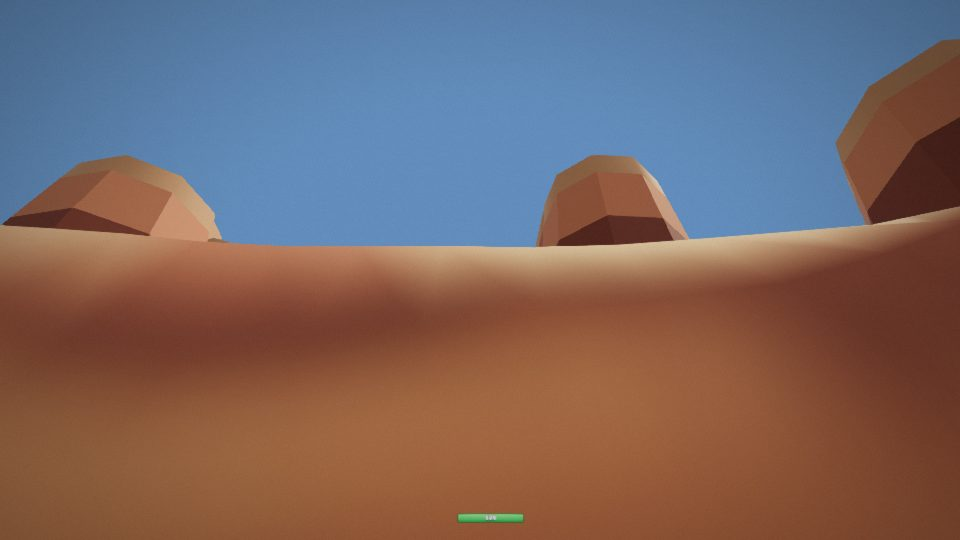
Floor 21, the same lip from beside it
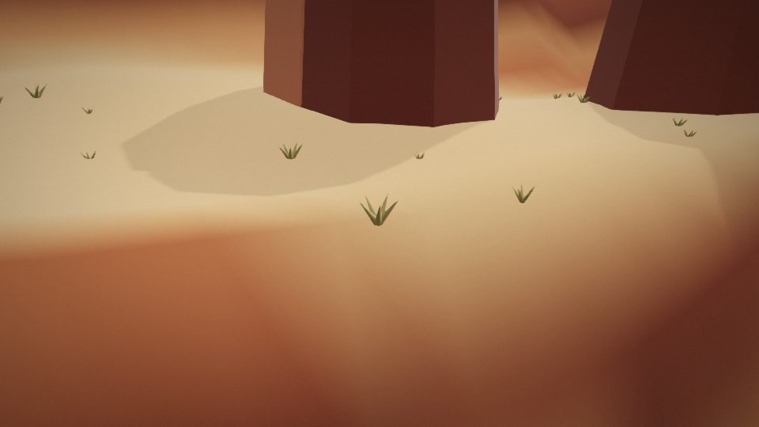
Floor 21, the north wall (the steepest one: a shrub on a 73-degree face)
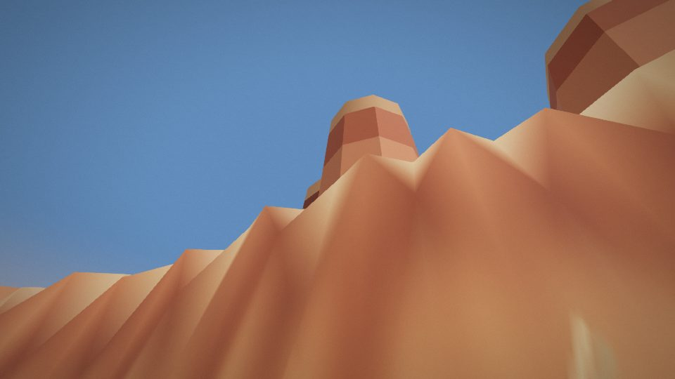
2. The War's scenes past the edge, on their hills
What was wrong. Each part of a scene past the edge (a field hospital, a burned farmhouse or mill, a graveyard, a fallen watchtower) stood on the ground under its own middle, level, so on a hill its downhill side stood 15 to 38 cm off the ground. Dropping each part to the lowest ground under it had been tried and undone: it sank a wall into its hill and left the beam it holds in the air.
The fix (src/tower/world/scenes/war.ts, seat): the whole scene is set on its slope as one piece, as the Sea's and the Wood's scenes already were (slopeFrame): turned to the plane that fits the ground under the parts that stand on it (8 degrees at most, so a post stays near upright) and let down until none of them is in the air (0.4 m at most). Small loose things (under 0.4 m high and 1 m across: a helmet, a stone) keep their own ground; a wide flat thing (a fallen tent's canvas) goes with the scene. Only the drawing moves: the plan, its checks and the dice are as before. The props probe on floors 41 to 50: pieces of these scenes with a gap under their base, before 2 to 8 a floor (up to 0.38 m, the fallen tent on floor 50), after none; no new floating or buried pieces.
Floor 42, the field hospital: the fallen tent's canvas
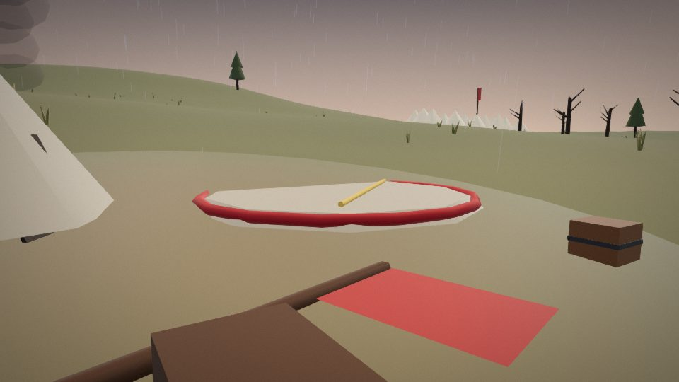
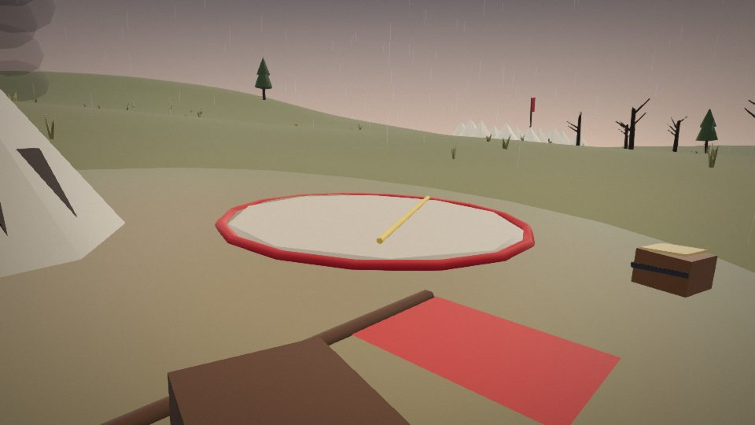
Floor 42, the burned mill
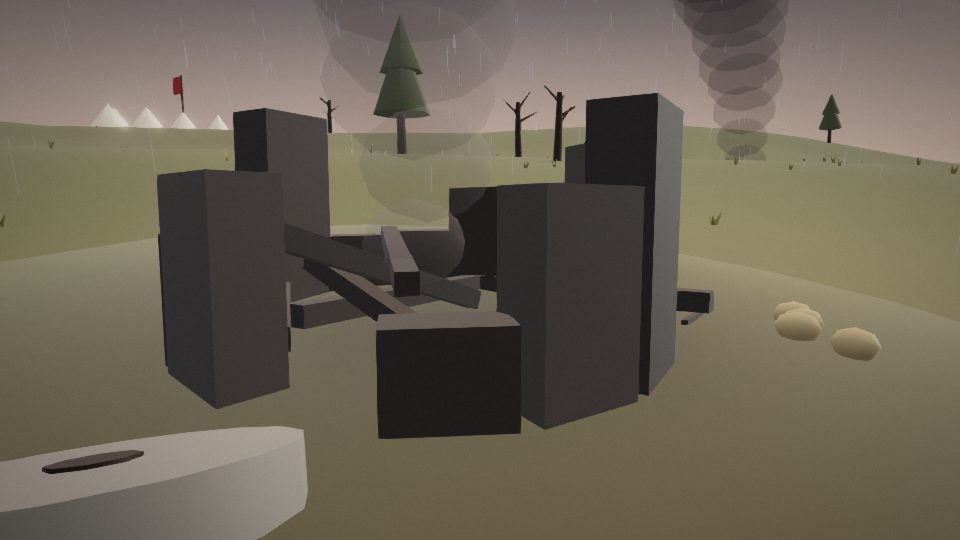
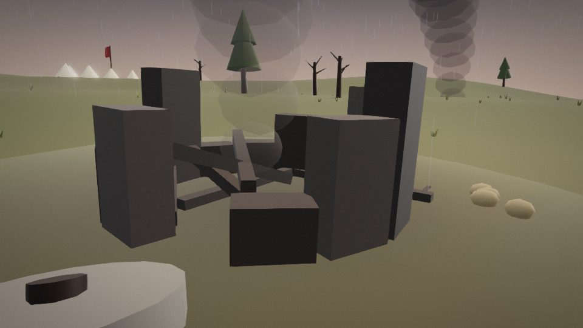
Floor 48, the fallen watchtower, and floor 50, the field hospital
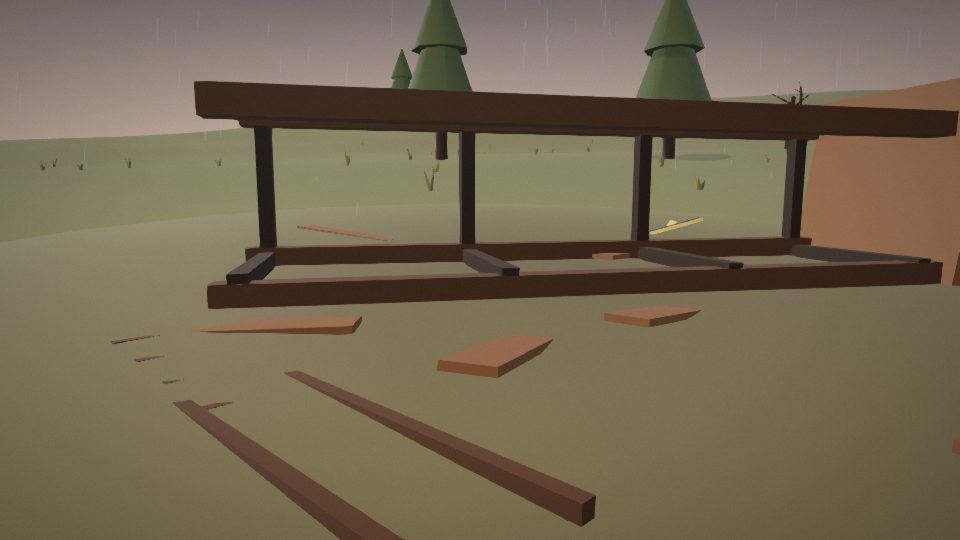
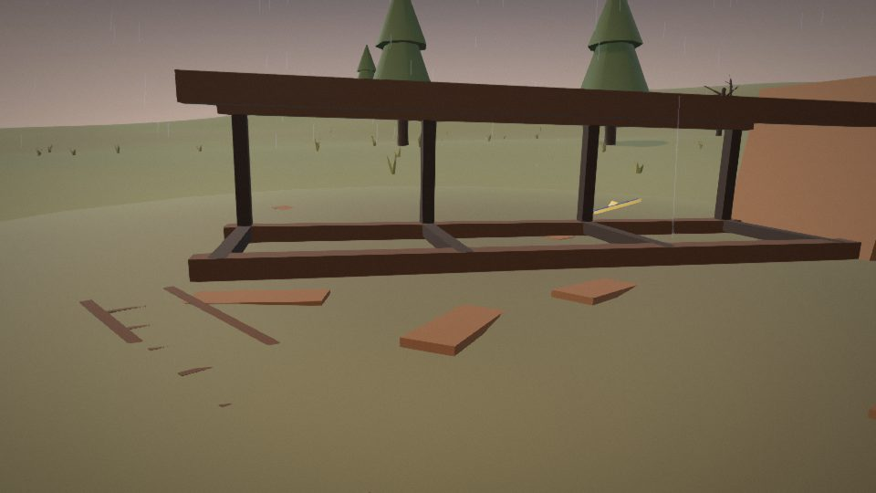
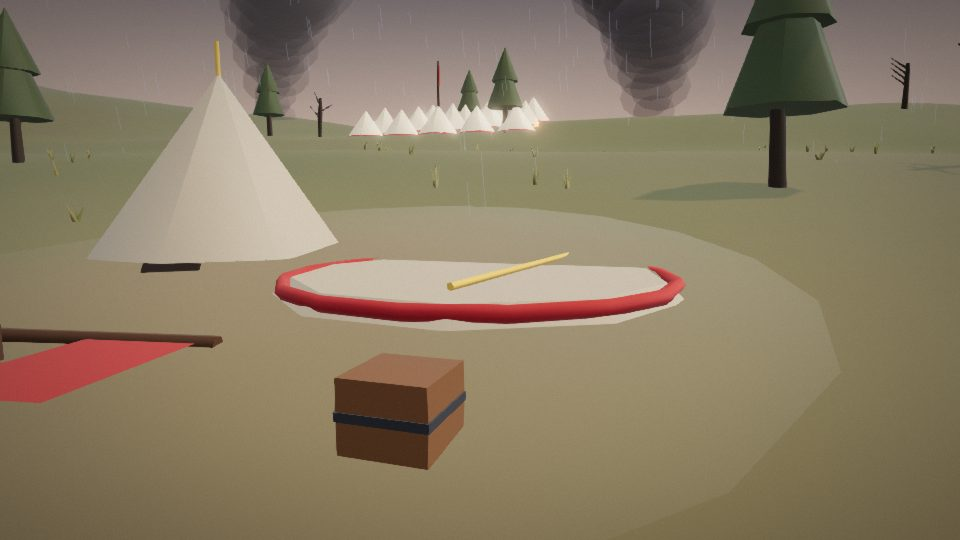
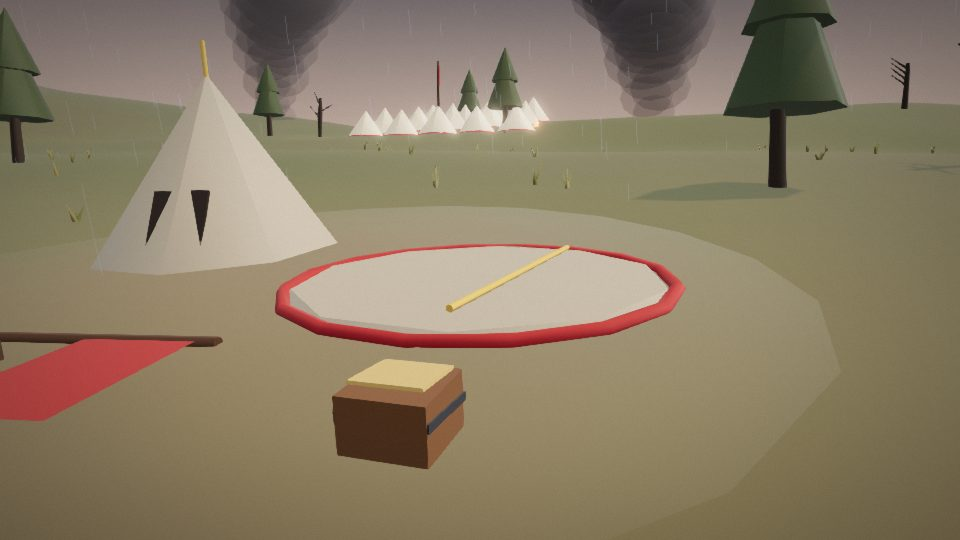
3. The perf tool's raid print: the same every run
What was wrong. python pipeline/tools/perf.py prints a hash of each fight; raid-party printed e83903c0, 34f75b29, b53a2f62 or 9c4a9c48 on the same code. Laid side by side, two runs rolled the same dice frame by frame until one of them rolled about 120 more in one frame: a raid partner's tree-planting spell built its trees then. Two things made that depend on the machine and not on the fight:
- The tool's clock started at the real time the setup happened to end. The game reads the clock in its rules: a partner's trees grow at "planted + 1.2 s" and "+ 2.5 s" (
timberNow, the clock when no trait writes one), and with a different start they grew a frame early or late. Anything the setup stamped (the setup takes a different time every run) was older or younger when the fight began. - three.js rolls the fight's dice (the seeded
Math.random) for the id of every object it makes, four rolls each. So one tree built a frame early moved every die after it. A model file that came in while the fight ran did the same, at whichever pause between frames real time let it land.
The fix (the tool only, pipeline/tools/perf-page.js; no game code): the clock stands still from the start of the setup and starts at the same instant every run; and what comes in during the tool's pauses between frames rolls dice of its own, not the fight's.
raid-party, run after run on the same code
| runs | prints |
|---|---|
| before: 13 runs, desktop (2026-11-15) | 34f75b29 ×5, b53a2f62 ×4, 9c4a9c48 ×2, e83903c0 ×2; desktop-4x and phone printed others again |
| after: 3 runs desktop, 1 desktop-4x beside another run, 1 with an unused function added to the raid's code | 9c4a9c48 every time, the same number of dice in every one of the 1,500 frames |
| after, on the code with the Climb's new rulers' and enemies' models: 2 runs desktop, 1 desktop-4x | 9c4a9c48 every time, frame by frame |
The baseline: every scene's print, taken again (docs/perf/data/prints.json, desktop)
| scene | 2026-11-13 baseline | |
|---|---|---|
| menu | e8106cc4 | e8106cc4 |
| duel-temple | 90b1abaa | 90b1abaa |
| duel-harbour | d8b98583 (desktop and desktop-4x) | 99f6f529 or c2218455: it moved with the clock too; the old tool on today's code prints c2218455 |
| raid-solo | ff20c830 | ff20c830 |
| raid-party | 9c4a9c48 | moved (above) |
| tower-horde | 6b769e22 | 6b769e22 |
| world-1 (floor 1) | d862aa08 | ac87b176 before the rulers' and enemies' models |
| world-2 (floor 11) | 433b3ded | 467f6a06 before the Climb's people |
| gen-12 (floor 12) | 72213473 | cd7fa7c6 before the models |
| world-3 (floor 21) | 45b46573 | 45b46573 |
| world-4 (floor 31) | 19e8c310 | 988f012d before the models |
| world-5 (floor 41) | 74cfad16 | da05c457 before the models (the merged code without this branch's War edits prints 74cfad16 too) |
Floors 1, 11, 12, 21 and 31 printed the same twice, and floors 1 and 31 also on desktop-4x, frame by frame. The Climb's prints change when its models change (new models are new objects, new dice); they are taken on the branch with the rulers' and enemies' models merged in.